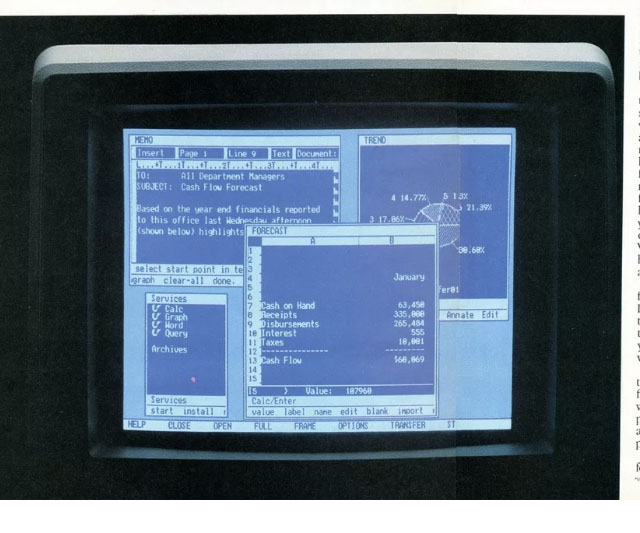

Project Sierra,
one of Atari's new 16-bit computer design idea's. Sierra sadly was a
travesty from the start.
The idea was
simple enough - design a computer by committee. This idea did
nothing but cause constant delay's, bickering, constant changes and an
engineering team who could never even get started on a design because no one
could decide on what way to go.
There were
questions on the processor - 68000, 32016 or 286. Memory was being
debated on. Storage was also another target of disagreement - whether to be IBM
5.25" format or a newer upcoming 3", 3 1/4" or 3.5" standard, these were all
being presented and discussed.
For the Operating System,
considerations were being narrowed to the possibility of using VisiCorp's new "Visi
On" Windowing Operating system that had just been released in 1983:

Atari engineers were also
disussing implementing Project "Snowcap" - Atari's own custom Windowing OS
running on a version of BSD Unix.
So while the
bickering of the system was on-going, the chipset continued along outside of the
sphere of confusion from the committee. The Chipset was being done
under Ted Kahn and Chris Jeffers in Atari's Corporate Research group in 1196
Borregas.
The new high end chipset was
called "Rainbow" - the chipset would consist of an advanced sound processor
capable of up to 64 channels.
The graphics side
was a pair of chips - Silver & Gold. Gold was the graphics display
list processor and Silver was the sprite generator. The design was
scalable - the more sprites needed, the more Silvers that could be added onto
it.
During design and
conceptualization, even Atari's own Industrial Design group was kept out of the
loop and instead of a proper plastic concept case, a rough mockup was made.
The design was clumsy, ugly and very un-Atari looking.
Meanwhile in other area's of the
company, things were moving along into actually demonstrating hardware in a
group called "GAZA"...